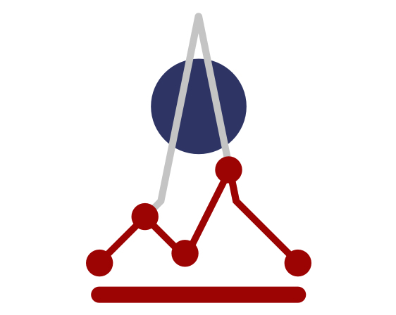

2nd Place
MAFAT
Web Activity Segmentation
Achieved 2nd place out of 338 teams.
Implemented a sophisticated feature set and a large-scale ensemble to classify device behaviors from anonymized, label-agnostic web activity logs.
Awarded a prize of 10K dollars.